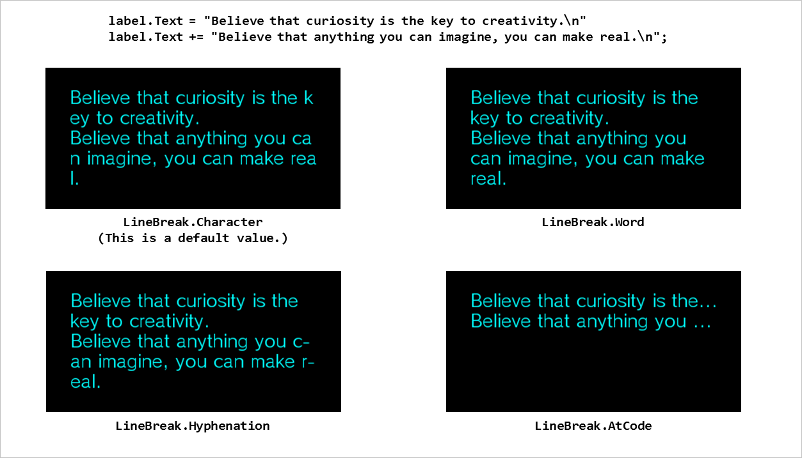
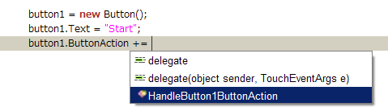
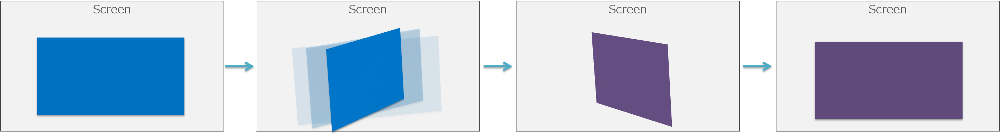
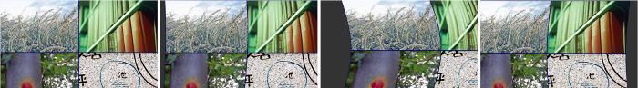

この章では、UI Toolkit に標準で組み込まれているウィジェットの概要を紹介します。
Contents
シーンを構成するウィジェットは RootWidget をルートにしたツリー構造になっています(図1)。

図1 シーンを構成するウィジェットの構造
Widget クラスはすべての ウィジェット (ユーザーインターフェース部品) の基底となる抽象クラスです。
すべての種類のウィジェットに共通した機能である、位置やサイズ、表示・非表示などを取得、設定することが出来ます。
Widget widget = new ConcreteWidget(); widget.X = 100.0f; widget.Y = 50.0f; widget.Width = 200.0f; widget.Height = 100.0f; widget.Visible = false; widget.Anchors = Anchors.Top | Anchors.Bottom | Anchors.Left | Anchors.Right;Anchors プロパティについては「基本概念」の「レイアウト」節を参照してください。
独自のウィジェットを作成するためには、 Widget クラス、または派生クラスの ContainerWidget クラス、 Dialog クラスなどを継承してください。詳しくは カスタムウィジェットの作成方法 を参照してください。
シーンを構成するウィジェットツリーのルートになる特殊なウィジェットです。
シーンを作成したときに自動的に作成され、 Scene の RootWidget プロパティで取得することが出来ます。アプリケーションから RootWidget クラスのインスタンスを作成することは出来ません。
ウィジェットを画面に表示する場合は、このルートウィジェットの子供に配置する必要があります。
Scene scene = new Scene(); Label label = new Label(); label.SetPosition(10.0f, 50.0f); label.Text = "Hello World!"; scene.RootWidget.AddChildLast(label);RootWidget オブジェクトの 幅 (Width) と高さ (Height) はスクリーンバッファのサイズに一致し、変更することが出来ません。また、位置 (X, Y) は (0, 0) で変更できません。
テキストを表示するためのウィジェットです。
テキストは文字列中の改行コードを反映して表示されますが、それでもテキストがラベルの幅に収まらない場合、LineBreak プロパティを設定することでテキストを折り返して表示することが出来ます。各設定値の表示結果は以下のようになります。
図2 Label の LineBreak プロパティ
改行しても矩形内に収まらない場合、最終行の右端の表示方法は TextTrimming プロパティで指定することが出来ます。各設定値の表示結果は図3 のようになります。

図3 Label の TextTrimming プロパティ
Label label1 = new Label(); label1.SetPosition(0.0f, 0.0f); label1.SetSize(100.0f, 80.0f); label1.Font = new UIFont(FontAlias.System, 32, FontStyle.Regular); label1.TextColor = new UIColor(0, 255, 0, 255); label1.TextTrimming = TextTrimming.EllipsisCharacter; label1.LineBreak = LineBreak.Word; label1.Text = "Hello world!";
画像を表示するためのウィジェットです。
画像は ImageAsset クラスのオブジェクトとして設定します。
ImageBox imageBox1 = new ImageBox(); imageBox1.Image = new ImageAsset("/Application/assets/img.png");画像を表示する際のスケーリング方法を図4 の5パターンで指定できます。

図4 画像のスケーリング方法
9-patch 画像では、NinePatchMargin プロパティを指定する事で四隅を固定してスケーリングできます(図5)。
ImageBox imageBox1 = new ImageBox(); imageBox1.Image = new ImageAsset("/Application/assets/img.png"); imageBox1.ImageScaleType = ImageScaleType.NinePatch; imageBox1.NinePatchMargin = new NinePatchMargin(24, 24, 24, 24);
図5 ImageBox の 9-patch によるスケーリング
タッチ操作に反応するボタンウィジェットです。
ボタンには画像か1行のテキストを表示することが出来ます(図6)。

図6 テキストを表示したButtonと、画像を表示したButton
Button textButton = new Button(); textButton.Text = "OK"; Button imageButton = new Button(); imageButton.IconImage = new ImageAsset("/Application/assets/img.png");このウィジェットをタップするか Enterキーを押下すると、任意のコードを実行できます。
ボタンが押された場合に実行するコードは ButtonAction イベントを使用します。以下のように、実行したいコードを記述したイベントハンドラを用意し、ButtonAction イベントに登録します。
Button button1 = new Button(); button1.Text = "Start"; button1.ButtonAction += HandleButton1ButtonAction;void HandleButton1ButtonAction(object sender, TouchEventArgs e) { button1.Text = "Stop"; }なお、PSM Studio のコードテンプレート機能を使用すれば、イベントの代入式を記述するだけで自動でイベントハンドラを生成可能です(図7)。
図7 イベントハンドラの自動生成
ボタンの背景画像を変更したい場合は、CustomButtonSettings プロパティを使用します。通常、押下、無効の３つの状態の背景画像と、これらの9-patch のマージンを指定できます(図8)。
Button customButton = new Button(); customButton.Text = "Custom Button"; CustomImageSettings customImage = new CustomImageSettings(); customImage.BackgroundNormalImage = new ImageAsset("/Application/assets/BackgroundNormalImage.png"); customImage.BackgroundPressedImage = new ImageAsset("/Application/assets/BackgroundPressedImage.png"); customImage.BackgroundDisabledImage = new ImageAsset("/Application/assets/BackgroundDisabledImage.png"); customImage.BackgroundNinePatchMargin = new NinePatchMargin(10,10,10,10); customButton.CustomImage = customImage; customButton.Style = ButtonStyle.Custom;
図8 背景画像をカスタマイズしたButton
いわゆるチェックボックスやラジオボタン用のウィジェットで、真偽値を保持します(図9)。

図9 CheckBox
このウィジェットをタップするか Enterキーを押下すると、真偽値が切り替わります。
真偽値は Checked プロパティで取得と設定ができます。また、Style プロパティによってチェックボックスかラジオボタンの画像を切り替えることが出来ます。
CheckBox check1 = new CheckBox(); check1.Checked = true; check1.CheckedChanged += HandleCheck1CheckedChange;CheckBox radio1 = new CheckBox(); radio1.Style = CheckBoxStyle.RadioButton; radio1.CheckedChange += HandleRadio1CheckedChange;
数値などの調整を行うためのウィジェットです(図10)。

図10 Slider
中央のノブをドラッグして動かすか左右（または上下）キーを押下することによって値を調整できます。この値は Value プロパティで取得することができます。値の範囲は MinValue および MaxValue プロパティで設定することができ、ノブが左端にある場合に最小値となります。
Orientation プロパティでスライダーを縦方向にすることができ、この場合、ノブが下に来たときに Value が最小値となります。
値が変更になった場合のイベントは、ValueChanged と ValueChanging の2種類あります。ValueChanged イベントは、ノブをドラッグして指が離されたとき、および アプリケーションコードから Value プロパティの値を変更したときに発行されます。ValueChanging イベントは、ValueChanged イベントの発行タイミングに加えて、ノブをドラッグ中でも値が変更されていれば毎フレーム発行されます。
アプリケーションコードから Value プロパティを設定する場合など、ValueChanged および ValueChanging イベントを一時的に発行させたくない場合は、ValueChangeEventEnabled プロパティを false に設定してください。
左右キー（縦方向表示の場合は上下キー）ではフォーカスが移動されないので、このウィジェットの左右にフォーカスのあたるウィジェットを配置しないようにしてください。
Slider slider1 = new Slider(); slider1.Orientation = SliderOrientation.Horizontal; slider1.MinValue = -127; slider1.MaxValue = 128; slider1.ValueStep = 1; slider1.Value = 0; slider1.ValueChanged += HandleSlider1ValueChanged; slider1.ValueChanging += HandleSlider1ValueChanging;
進捗の度合いを表示するウィジェットです(図11)。

図11 ProgressBar
表示のスタイルは通常とアニメーションの2種類あり、Style プロパティで設定できます。アニメーションのスタイルは、進捗の比較的遅い処理を行う際に有用です。
進捗度合いは Progress プロパティに 0 から 1 の範囲で設定します。
progressBar = new ProgressBar(); progressBar.Style = ProgressBarStyle.Animation;void OnUpdate() { progressBar.Progress = (float)processedItemCount / allItemCount; }
テキストの表示と編集ができるウィジェットです(図12)。

図12 EditableText
このウィジェットをタップするか Enterキーを押下すると、システム標準のオンスクリーンキーボードが起動し、テキストの入力や編集ができます。
テキスト未入力時のデフォルトテキストの表示、パスワード入力用のマスク表示、オンスクリーンキーボードの入力モードの選択ができます。
EditableText progressBar = new EditableText(); EditableText.Text = "";
何らかの処理が進行中であることを表示するウィジェットです(図13)。

図13 BusyIndicator
初期状態では非表示になっています。Start メソッドを呼ぶことで表示され、処理中を示すアニメーションを行います。また、Stop メソッドで非表示になります。
初期化後からインジケータを表示させておきたい場合は、インスタンスの作成時に autoStart 引数をとるコンストラクタを使用し、autoStart に true を設定してください。
コマ送りのアニメーションイメージを表示するウィジェットです(図14)。
使用するアセット画像は、各コマの画像をまとめて一つの画像にする必要があります。各コマは左上から右方向に並べ、列数や行数に制約はありません。コマ数、およびコマの幅と高さは、それぞれ、FrameCount, FrameWidth, FrameHeight プロパティで指定します。

図14 AnimationImageBox 用アセット画像の例
Start メソッドでアニメーションを開始し、Stop メソッドで停止します。コマの表示間隔は FrameInterval プロパティにミリ秒単位で指定できます。
PopupList は複数の選択肢の中から1つを選ぶために利用する部品です(図15)。

図15 PopupList
PopupList をタップするか Enterキーを押下すると、タイトルとリストを持つ Dialog が表示されます。リストの中から１つを選択(タップ / 上下およびEnterキー)すると、Dialog が閉じ、選択した項目が PopupList に表示されます。Dialogの外側をタップするか Backキーを押下すると選択がキャンセルされて Dialog が閉じます。
リストに表示する中身は、ListItems プロパティで設定できます。また、Dialog のタイトルは、ListTitle プロパティで設定できます。
日付を選択するためのウィジェットです(図16)。

図16 DatePicker
アイテムを上下にドラッグするか、各列にフォーカスを合わせて上下キーを押すことで日付を変更できます。
上下キーではフォーカスが移動されないので、このウィジェットの上下にフォーカスのあたるウィジェットを配置しないようにしてください。
時刻を選択するためのウィジェットです(図17)。

図17 TimePicker
DatePickerと同じ操作ができます。
任意のウィジェットを載せることの出来るウィジェットの基底クラスです。
AddChildFirst、AddChildLast メソッドで Widget を先頭および末尾に追加することが出来ます。追加された子ウィジェットは Children プロパティで取得することが出来ます。登録されている子ウィジェットは最後に追加されたのもが前面に表示されます。
一旦登録した子ウィジェットを削除したい場合は RemoveChild を使用します。単純に子ウィジェットを非表示にするのみであれば Visible プロパティを使用してください。
同じウィジェットのインスタンスを複数のコンテナウィジェットに所属させることは出来ません。
コンテナウィジェットに所属する子ウィジェットはアンカーを使用することができます。アンカーについての詳細は UI Composer のドキュメントを参照してください。
任意の UI 部品を載せることができるコンテナウィジェットです。
もっともシンプルなコンテナウィジェットで、背景色を指定することが出来ます。
スクロール可能な領域を持つパネルです(図18)。

図18 ScrollPanel
子ウィジェットとして Panel を一つ持っており、その一部分をクリッピングして表示します。タッチ操作で上下や左右方向にスクロールさせることが可能です。スクロール可能な方向を制限することも可能です。
panel1 = new ScrollPanel(); panel1.X = 300.0f; panel1.Y = 0.0f; panel1.Width = 400.0f; panel1.Height = 280.0f; panel1.PanelWidth = 400.0f; panel1.PanelHeight = 2000.0f; panel1.PanelColor = new UIColor(0.2f, 0.2f, 0.2f, 0.8f); panel1.PanelX = 10.0f; panel1.PanelY = 10.0f; panel1.ScrollBarVisibility = ScrollBarVisibility.Visible; panel1.HorizontalScroll = false; Label label1 = new Label(); panel1.AddChildLast(label1); label1.X = 310; label1.Y = 10; label1.Width = 340.0f; label1.Height = 1000.0f; label1.Text = " ... ";
ページ単位でスクロールすることのできるパネルです(図19)。

図19 PagePanel
PagePanel は AddPageLast メソッドにより複数のページを追加でき、ページごとにPanelオブジェクトを持ちます。GetPage メソッドで指定したページのパネルを取得できます。
pagePanel = new PagePanel(); pagePanel.X = 0.0f; pagePanel.Y = 0.0f; pagePanel.Width = 800.0f; pagePanel.Height = 400.0f; MyCustomPanel panelA = new MyCustomPanel("Tokyo"); MyCustomPanel panelB = new MyCustomPanel("London"); pagePanel.AddPageLast(panelA); pagePanel.AddPageLast(panelB);
縦方向のみスクロール可能なリストウィジェットです。各項目に表示する内容は ListPanelItem またはその派生クラスで指定します。
ListPanelItem のインスタンスは、ListPanel に一度に表示される個数しか作成されません。スクロールにより隠れた項目は次に表示される項目に再利用されます。そのため、ListPanel には、各項目で共通に用いる ListPanelItem オブジェクトを生成するデリゲートメソッドと、各項目に特化した内容に更新するデリゲートメソッドを登録する必要があります。登録には ListPanel の SetListItemCreator/SetListItemUpdate メソッドを呼び出して下さい。
項目数とセクションのタイトル文字列は ListPanel の Sections プロパティで設定してください。
項目が選択されたことをハンドルする場合は SelectItemChanged イベントを使用してください。
// data to show on the items itemTextList = new string[] { "Item 0-0", "Item 0-1", "Item 0-2", "Item 1-0", "Item 1-1" }; listPanel = new ListPanel(); // set the section titles and item counts listPanel.Sections = new ListSectionCollection { new ListSection("Section1", 3), new ListSection("Section2", 2)}; // set the creator delegate listPanel.SetListItemCreator(() => new MyListPanelItem()); // set the updater delegate listPanel.SetListItemUpdater((item) => ((MyListPanelItem)item).label.Text = itemTextList[item.Index]); listPanel.SelectItemChanged += (sender, e) => Console.WriteLine("selected index:{0}", e.Index);class MyListPanelItem : ListPanelItem { public Label label; public MyListPanelItem() { this.Height = 60; label = new Label(); this.AddChildLast(label); } }
縦方向もしくは横方向にスクロール可能で、格子状に項目が並ぶリストウィジェットです。写真の一覧画面などで利用することを想定しています。各項目に表示する内容は ListPanelItem で指定します。
ListPanel と同様の方法で、ListPanelItem を 生成/更新するデリゲートメソッドを設定して使用して下さい。
GridListPanel にはセクションがないため、ListPanelItem の SectionIndex と IndexInSection プロパティは使用されません。
gridListPanel = new GridListPanel(); gridListPanel.SetListItemCreator(ListItemCreator); gridListPanel.SetListItemUpdater(ListItemUpdator); gridListPanel.ItemCount = 100;
ダイアログはモーダルなダイアログを表示することの出来る特殊なウィジェットです。
ダイアログのみシーンに登録せずに画面に表示することができます。
モーダルなダイアログボックスを表示するためのコンテナウィジェットです(図20)。Panel と同様に任意のUI部品を格納することが可能です。

図20 Dialog
ダイアログが表示されている際に Backボタンを押すとダイアログが閉じます。また、HideOnTouchOutsideプロパティをtrueにしておけば、ダイアログの外側をタップするとダイアログが閉じます。Backボタンかダイアログの外側をタップして閉じた場合は、Result プロパティが Cancel になります。
表示/非表示にする際のアニメーション効果(Effect)を指定することが可能です。
Dialog dialog = new Dialog(); dialog.ShowEffect = new BunjeeJumpEffect(dialog, 0.4f); dialog.HideEffect = new TiltDropEffect(); dialog.Show();
警告メッセージの表示や、処理実行の確認などを行うためのダイアログです(図21)。

図21 MessageDialog
タイトルテキスト、メッセージテキスト、OK/キャンセルボタンがあります。
dialog = new MessageDialog(); dialog.Title = "Title"; dialog.Message = "This is a samle message."; dialog.Style = MessageDialogStyle.OkCancel; dialog.ButtonPressed += new EventHandler<MessageDialogButtonEventArgs>(ButtonDownHandler);
Live ウィジェットは、さまざまなインタラクションが実装された PSM 独自のウィジェットです。
タッチした項目に対して、時間差を伴って他の項目がスクロールするリストウィジェットです(図22)。

図22 LiveListPanel
パネル内に配置したウィジェットを画面手前にジャンプさせることのできるパネルウィジェットです。 加速度センサーの値変化やボタンの押下など任意のタイミングで子ウィジェットをジャンプさせることが可能です。
左右のフリックで回転するパネルウィジェットです(図23)。表と裏のウィジェットを指定することが可能です。
図23 LiveFlipPanel
タッチした点を起点として、ゆがみながらスクロールするパネルウィジェットです(図24)。
図24 LiveScrollPanel
球体状のウィジェットです(図25)。左右にフリックすることで回転できます。またタップに対するイベントハンドラも定義されており、ボタンとしても利用できます。

図25 LiveSphere
加速度センサーやパネルの動きに応じて子ウィジェットが揺れるパネルです(図26)。

図26 LiveSpringPanel
ウィジェット毎にばね定数や減衰定数を指定することが可能です。
liveSpringPanel = new LiveSpringPanel(); liveSpringPanel.ReflectSensorAcceleration = true; liveSpringPanel.ReflectMotionAcceleration = true; liveSpringPanel.SetPosition(0.0f, 0.0f); liveSpringPanel.SetSize(200.0f, 200.0f); button = new Button(); liveSpringPanel.AddChildLast(button); liveSpringPanel.SetSpringConstant(button, SpringType.All, 0.5f); liveSpringPanel.SetDampingConstant(button, SpringType.All, 0.3f);